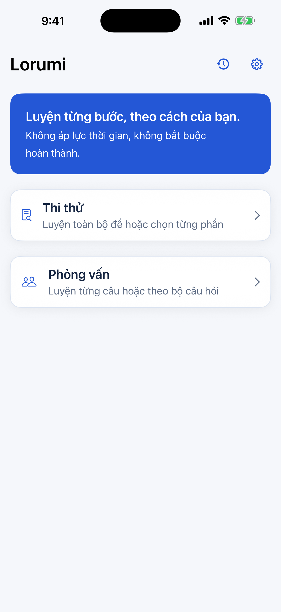

DÀNH CHO NGƯỜI VIỆT TẠI HÀN QUỐC
Từng bước luyện tập.
Tự tin hơn mỗi ngày.
Chuẩn bị cho bài thi tổng hợp và phỏng vấn nhập quốc tịch Hàn Quốc. Luyện câu hỏi tiếng Hàn với hướng dẫn tiếng Việt, theo nhịp độ của bạn.
Dành cho iPhone · iOS 17 trở lên
한국어 × Tiếng Việt

↳ Không áp lực thời gian.
Luyện theo cách của bạn.
Câu hỏi tiếng HànLàm quen với ngôn ngữ của bài thi
Hướng dẫn tiếng ViệtHiểu rõ điều cần luyện tập
Theo nhịp độ của bạnKhông hẹn giờ, không bắt buộc hoàn thành
MỖI LẦN LUYỆN, THÊM MỘT BƯỚC
Từ hiểu câu hỏi
đến tự mình trả lời.
01 / HIỂUHiểu cả đáp án,
không chỉ chọn đúng.
Luyện câu hỏi trắc nghiệm bằng tiếng Hàn. Xem đáp án và giải thích tiếng Việt để hiểu vì sao một lựa chọn đúng hoặc chưa đúng.
- Luyện toàn bộ đề hoặc chọn từng phần.
- Lưu câu hỏi để quay lại ôn tập.
- Chuyển câu khi bạn đã sẵn sàng.
02 / DIỄN ĐẠTTập nói điều
bạn muốn chia sẻ.
Luyện phỏng vấn theo bộ câu hỏi hoặc từng câu riêng lẻ. Ghi âm câu trả lời và nghe lại để tự nhận ra điều cần luyện thêm.
- Làm quen với câu hỏi phỏng vấn bằng tiếng Hàn.
- Tập trả lời nhiều lần theo cách của bạn.
- Kết hợp với phần luyện nói và luyện viết.
03 / VIẾTĐưa ý tưởng thành câu.
Luyện viết câu trả lời bằng tiếng Hàn. Tham khảo nội dung cần có và bài mẫu để tiếp tục hoàn thiện cách diễn đạt.
04 / ÔN LẠIGiữ lại điều cần nhớ.
Quay lại hoạt động gần đây và các câu hỏi đã lưu trong sổ ôn tập. Tiếp tục từ những phần bạn muốn luyện thêm.
MỘT CHÚT LUYỆN TẬP, MỖI NGÀY
Bắt đầu từ
một câu hỏi.
Lorumi sắp có mặt trên App Store.
Hẹn gặp bạn trong hành trình luyện tập.
● Sắp ra mắt trên iPhone
{kind=link}